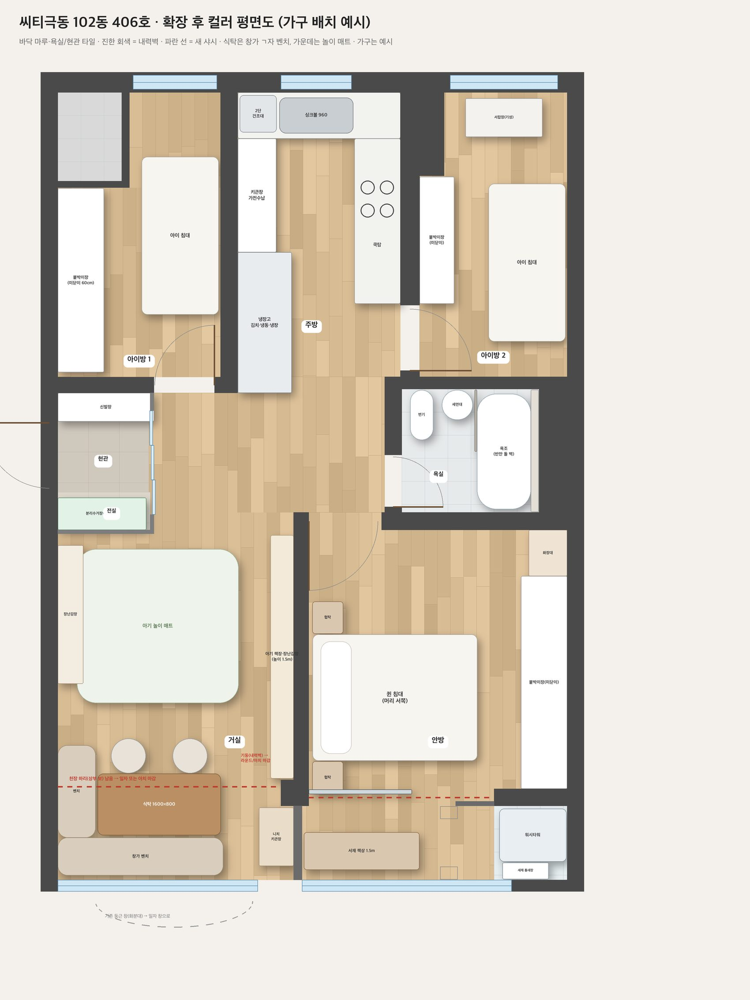
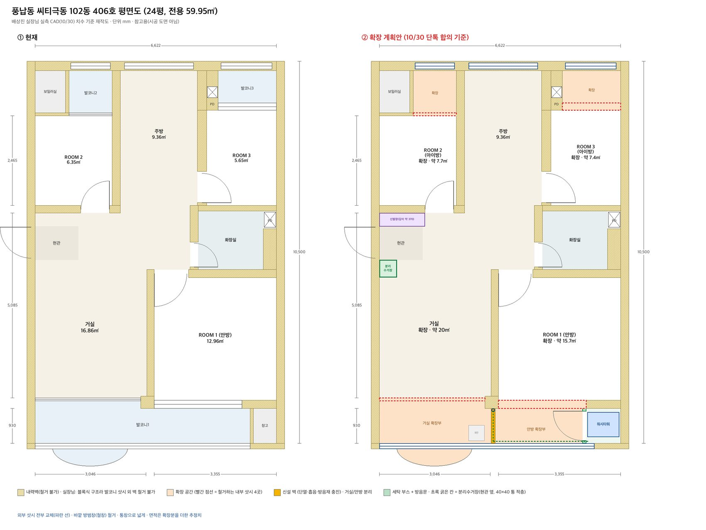
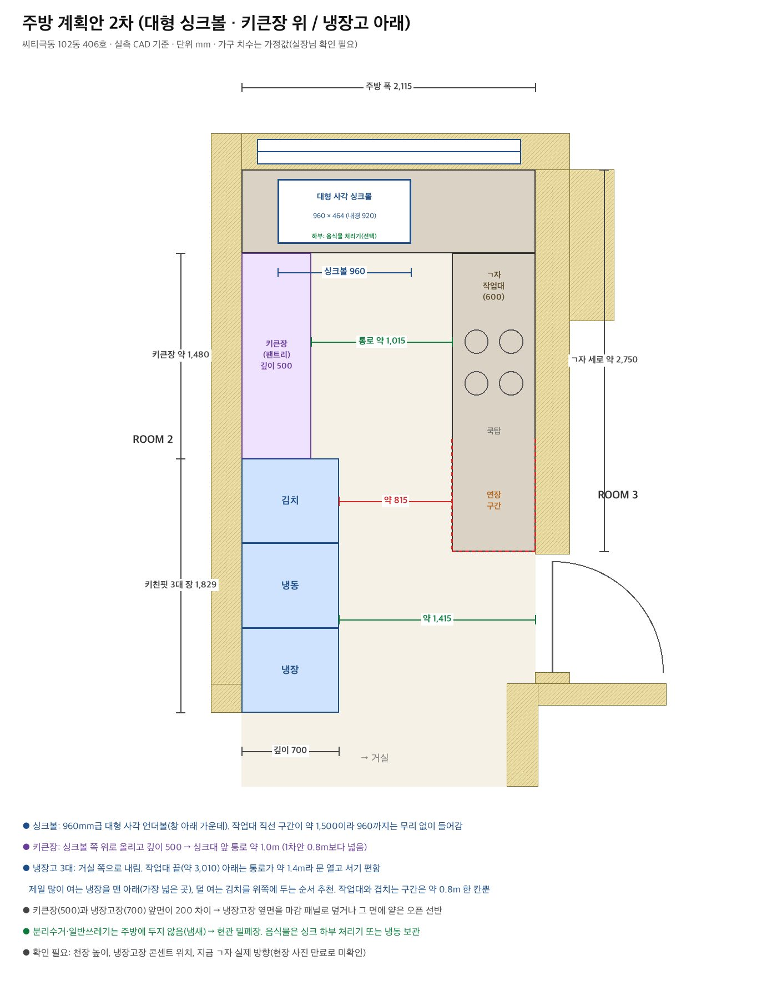
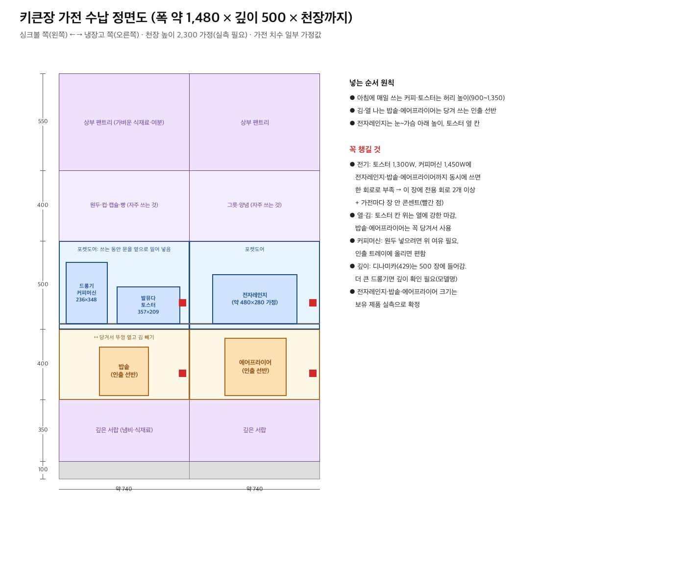
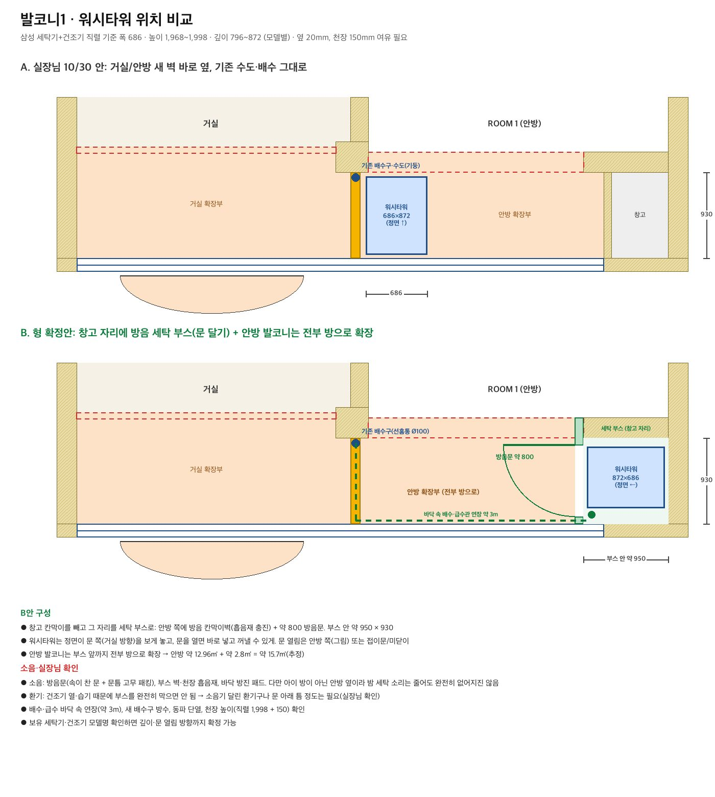
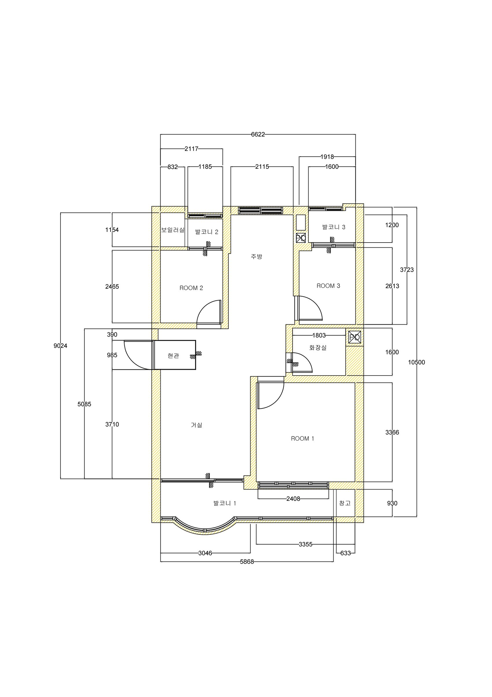
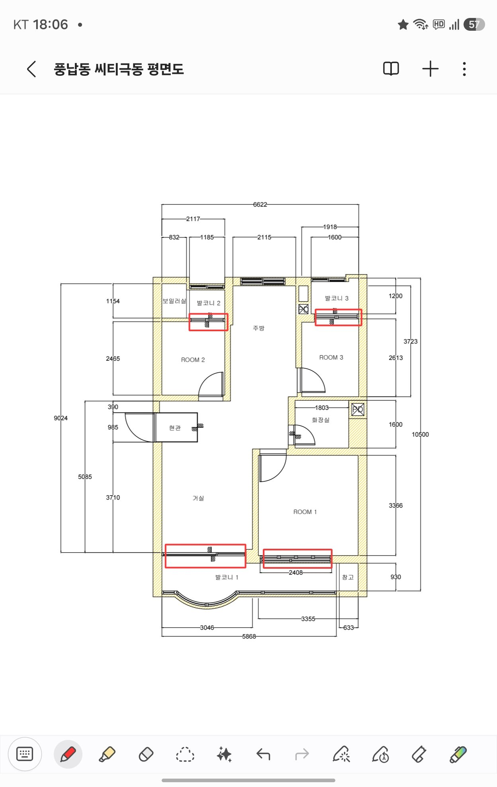

아래 📷 사진처럼 둘러보기를 누르면 실제 빛으로 그린 360° 사진 속에 들어가 드래그로 둘러볼 수 있어요(조명 보기의 낮/밤 버튼으로 바꿈). 모형 전체를 돌려 보려면 ✕ 3D 모형으로.
3D 불러오는 중…
드래그: 돌리기 · 두 손가락/휠: 확대 · 우클릭/두 손가락 끌기: 이동
· 배치 점검: 모든 문이 열리는 자리(아이방·욕실·안방·세탁부스), 싱크·쿡탑 앞 60cm, 냉장고·키큰장 문 열림, 식탁 의자 빼는 자리, 침대 양옆·발치 통로, 세탁기·세면대·변기 앞 공간에 가구가 겹치지 않게 6개 컨셉 모두 자동으로 확인했어요.
· 천장 조명은 3D 아래 '조명 보기' 버튼으로 보세요: 밤 · 간접등만(평소 분위기), 밤 · 전부 켬(직접등까지), 천장 조명 평면도(위에서 본 조명 위치·종류 색 구분).
· 벽 높이는 천장 2.3m로 가정했어요(실측 천장고·하리 높이 받으면 수정). 평면 치수는 실측 CAD 기준이고 가구는 예시입니다.
· 주소창의 #c01~#c06 으로 컨셉을 바로 열 수 있어요. 예) 이 페이지 주소 끝에 #c05
사진처럼 렌더 (컨셉 01 화이트 오크 미니멀 기준)
3D 모델을 실제 빛 계산(Blender Cycles: 빛 반사·그림자·햇빛)으로 다시 그린 장면이에요. 배치·치수는 3D와 같아요. 바닥·원목·패브릭은 실제 재질 사진 질감(Poly Haven), 화분·바구니·화병 같은 소품은 실제 3D 모델이고, 가구 모양은 3D 계획 그대로예요. 낮은 남쪽 창 햇빛, 밤은 2700K 간접등만 켠 평소 저녁 모습이에요(매입등·레일은 끈 상태).







정해진 방향
- 확장 발코니 1·2·3 전부 확장, 샷시 전체 교체, 거실 둥근 창 → 일자 통창(양끝은 벽 + 키큰장, 거실 창 약 2.15m). 거실·안방 사이 확장부에 새 벽.
- 투톤 원칙 상부장·장 윗부분은 화이트로 가볍게, 하부장·서랍·니치는 우드로 무게감(주방·키큰장·신발장·분리수거장·거실장 공통).
- 주방 가전 전자레인지는 싱크 기준 오른쪽 상판 끝(전용 콘센트), 얼음정수기는 왼쪽 키큰장 가운데 칸(싱크에서 급수). 시스템 에어컨 거실 4웨이 1 + 안방·아이방1·아이방2 1웨이 각 1, 주방 없음.
- 주방 ㄱ자 + 오른쪽 연장. 오른쪽 상부장은 창 쪽 코너장 없이 오른쪽 벽에 깊이 35cm 일자. 싱크볼 960, 싱크 왼쪽 2단 건조대 위 상부장은 키큰장 폭(50cm)으로 벽까지 이어서 문이 창 쪽으로 열림. 오른쪽 전부 상부장(후드 일체). 키큰장 가운데는 모든 컨셉에서 열린 칸(홈카페). 주방 창은 싱크 위 약 0.92m.
- 거실·식탁 (고정) 모든 안 공통: 식탁 1,600×800은 거실 창가로, 기성품 ㄱ자 다이닝 소파(창 쪽 약 2.15m + 왼쪽 벽 약 1.16m, 붙박이 아님) + 맞은편 의자 2. 가운데(옛 식탁 자리)는 비워 둠(장난감·매트는 모형에서 뺌). 창 오른쪽(책장 쪽) 벽에 키큰장: 위 장(화이트)·아래 서랍(우드), 가운데 니치 없이 전부 수납. 창은 로만쉐이드.
- 안방 침대 머리 서쪽 벽, 동쪽 벽 전체 미닫이 붙박이장. 화장대는 폭 60cm, 서서 쓰는 높이(상판 90cm) + 아래 서랍, 모든 안에서 방문 쪽(왼쪽) 끝, 문 닫으면 장처럼 보이는 파우더룸형(02·06·08)도 있음. 일부 장문은 전신거울. 확장부는 서재(1.5m 책상), 안방과는 3짝 슬라이딩 도어로 분리(유리·플루티드·간살·한지·라탄 등).
- 아이방 아이방1은 붙박이장(깊이 60cm, 미닫이)을 서쪽 벽으로, 침대는 동쪽 → 창을 안 가림. 아이방2도 미닫이(폭이 좁아 깊이 45cm). 책상 없음, 이층 침대 없음. 기성 서랍장(100×50×110): 아이방2는 창가에 들어감(서랍 앞 약 52cm, 창 아래 20cm 가림), 아이방1 창가는 침대 머리와 18cm라 서랍을 못 열어서 붙박이장 앞쪽 1m 대신 넣는 안(01·05·07).
- 욕실 변기(문 쪽 구석) ↔ 세면대(욕조 옆). 세면대·변기 위에 대리석 다이(젠다이, 깊이 12cm, 높이 약 1.2m)를 일자로 길게, 그 위로 천장까지 거울장(아래 1.45m부터 띄움, 간접등), 수전은 벽 수전. 욕조 700×1,500 절반만 30mm 돌 벽, 욕조 뒤 덧벽 니치 2줄, 욕조 위 방습 다운라이트 2개 따로.
- 현관 전실 + 중문(3연동 또는 오크 프레임 원슬라이딩·샤틴 유리: 02·07·08) + 신발장(아래 우드·가운데 오크 니치·위 화이트) + 분리수거장 5분류(폭 1,150: 종량제 30cm 뚜껑 통 · 플라스틱 32cm · 위 비닐/아래 캔·유리 28cm · 종이 세움칸 16cm, 문을 당기면 통이 같이 나오는 인출식, 투입구 없음, 종량제·캔유리 칸은 아이 잠금) + 가운데 키 칸 + 상부장(봉투·장바구니).
- 세탁 창고 자리 세탁부스: 정면 전체를 4짝 폴딩도어로 → 열면 앞이 다 트여 세탁기 문이 끝까지 열림. 세탁기 옆 빼서 쓰는 세제 틈새장(폭 21cm), 위 선반. 방음은 흡음 패널 폴딩도어 + 고무 가스켓.
- 난방 개별난방(LNG). 확장부 바닥 난방 배관 연장 필요.
실장님께 받아야 할 것
- 천장 높이, 확장부 하리(상부 보) 높이 실측 → 3D·키큰장·워시타워(약 2,150 필요) 반영
- CAD 수정본(확장·새 벽·전실·세탁 부스 반영), 가능하면 스케치업 3D 뼈대
- 세탁 부스: 배수·급수 바닥 속 연장(약 3m) 구배, 방수, 동파 단열, 건조기 환기, 방음문 사양
- 주방 전용 회로 2개 이상(커피머신 1,450W·토스터 1,300W 등), 장 안 콘센트 위치
- 보일러 연식·위치, 확장부 난방 연장 방식
- 샷시 포함 정식 견적, 같은 라인 동의서, 착공일(1월 중순 목표)
우리가 정할 것
- 컨셉 고르기(섞어도 됨, 예: 02 오크 마감 + 03 좌식 라운지 + 02 홈카페 키큰장)
- 코스트코 2단 건조대 정확한 크기(가로·깊이·높이), 아기 책장 모델·길이
- 가전 모델명: 드롱기 커피머신, 전자레인지, 밥솥, 에어프라이어, 세탁기·건조기
- 재활용 배출 요일(관리사무소 문의)